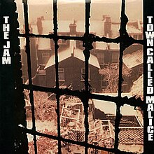
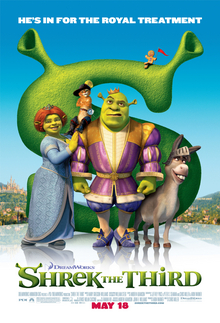

.jpg)


| personal information | |
|---|---|
| full name | Remi Tyberghien |
| adress | Baronielaan 26, 8760 meulebeke |
| phone number | 0472 91 75 68 |
| email adress | remi.tyberghien@hotmail.com |
| hobby's | ||
|---|---|---|
| name | description | website |
| bsketbal | gooien met een bal. | basketbal |
| voetbal | Spellen met een bal. | voetbal |
| wielrennen | rijden op een fiets. | wielrennen |
| Type | Name | Image | Website |
|---|---|---|---|
| Band | ratm | |
wikipedia |
| Band | aroma di amore | |
website aroma di amore |
| Band | linkin park | wikipedia | |
| music | doe de maffia | |
doe de maffia |
| music | The talking horse | |
the talking horse |
| music | Town Called Malice |  | the town called malice |
| movie | shrek | |
wikipedia |
| movie | shrek 2 | |
wikipedia |
| movie | shrek 3 |  | wikipedia |
| Vakken | Remi | Farouk | Romeo | Yousef |
|---|---|---|---|---|
| Wiskunde | 8.5/10 | 7.5/10 | 9.0/10 | 8.0/10 |
| Programmeren | 9.0/10 | 8.0/10 | 8.5/10 | 7.0/10 |
| Databases | 7.5/10 | 8.0/10 | 7.0/10 | 6.5/10 |